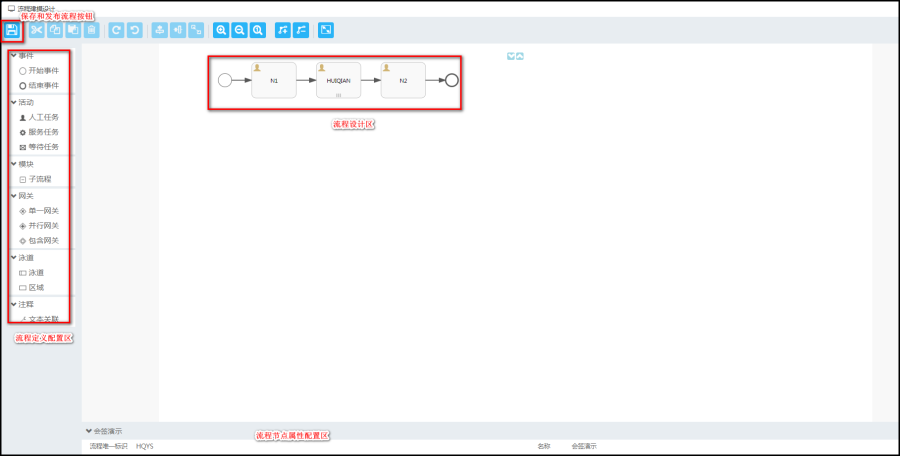
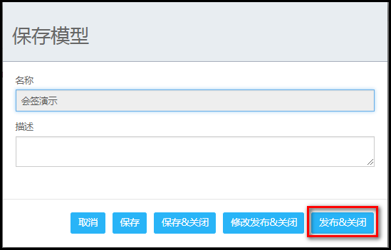

【描述】
点击【新建流程定义视图】中的【增加】按钮(含有新建和复制新建):
新建:新增加流程定义设计
复制新建:选择一条流程定义复制并且新建
【流程定义设计】
点击新建,编辑流程定义基本信息,点击[保存]进入流程定义设计页

【流程配置属性说明】
*1.开始事件:流程图开始节点配置
*2.结束事件:流程图结束节点配置
3.人工任务:流程图人工任务节点(配置用户)
4.服务任务:流程图服务任务节点(暂未开放)
5.脚本任务:流程图脚本任务节点(编写脚本)
6.子流程:流程图可带有子流程
7.单一网关:流程图单一网关节点(N条分支,条件走单一线)
8.并行网关:流程并行网关节点(N条分支,不需条件,走N线)
9.包含网关:流程包含网关节点(N条分支,满足几条件,走几条线)
10.泳道:流程图泳道配置(显示)
11.区域:流程图区域配置(显示)
12.文本关联:流程图中对任务节点进行文本关联
流程处理完成后，点【保存】按钮完成流程的保存处理

【说明】，若不需要发布，只需要点【保存】按钮。
若流程定义在使用过程中，则点【修改发布&关闭】按钮，这个将会影响正在运行的流程。
注意：若删除了节点，则不能使用该按钮进行保存。